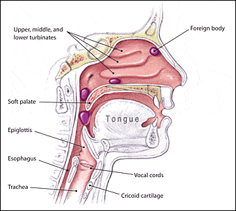

Expanded Nursing Uganda Explanation
Foreign bodies in the eye should be understood beyond a short definition. Link the concept to patient history, focused assessment, common risks, nursing priorities, documentation and evaluation of outcomes.
Contents, 31 sections (tap to expand)
01 FOREIGN BODY IN THE EYE
Foreign object in the eye is something that enters the eye from outside the body .
A foreign body in the eye refers to any external object or substance that enters and remains within the ocular structures , causing discomfort, irritation, or injury.
It can be anything that does not naturally belong there , and may include a speck of dust, wood chip, metal shaving, grass clipping, insect or a piece of glass.
Most foreign bodies are found under the eyelid or on the surface of the eye. When a foreign object enters the eye it will most likely affect the cornea or the conjunctiva.
- It can be EXTRA OCCULAR: Lid, sclera conjunctiva cornea or
- It can be INTRAOCCULAR: Angle of the anterior chamber, iris lens, Vitreous, Retina.
Find the anatomy of the eye by clicking here
MORBID ANATOMY:
The cornea is a clear doom that covers the front surface of the eye. It serves as a protective covering from the front of the eye. Light enters the eye through the cornea. It also helps to focus light on the retina at the back of the eye.
The conjunctiva is the thin mucous membrane that covers the sclera, or the white of the eye. The conjunctiva runs to the edge of the cornea. It also covers the moist area under the eyelids.
A foreign object that lands on the front part of the eye can not get lost behind the eye ball, but they can cause scratches on the cornea. These injuries usually are minor. However some types of foreign objects can cause infection or damage the vision.
02 Causes of Foreign Bodies in the eye.
Foreign bodies commonly enter the eye as a result of everyday activities, environmental factors, or accidents. While most are superficial and easily removable, high-velocity objects present the greatest danger due to their potential to penetrate deeper structures.
- Foreign Objects at High Speed : Objects like metal or glass particles are often propelled into the eye during explosions, drilling, or hammering. These pose a high risk of injury due to their velocity and sharp edges.
- Natural Causes :
- Eyelashes : Often fall into the eye and cause irritation.
- Dried Mucus : Flakes of dried mucus can lodge on the eye’s surface.
- Environmental Debris :
- Dirt and Sand : Typically blown into the eyes by wind or falling debris, these materials are common in outdoor settings.
- Sawdust : Often occurs during woodworking or construction activities.
- Sharp Particles :
- Metal Fragments : A common occupational hazard in welding, machining, or using power tools.
- Glass Fragments : May result from car accidents, breaking glass, or explosions.
- Cosmetics : Mascara, eyeliner, or powder-based cosmetics can accidentally enter the eye, especially during application.
- Chemicals : Cleaning agents, industrial chemicals, or sprays can irritate or damage the cornea when they come into contact with the eye.
- Contact Lenses : Damaged lenses or improper handling may leave particles in the eye, causing discomfort or injury.
03 Signs and Symptoms of foreign bodies in the eye.
Foreign bodies in the eyes can present with various symptoms and signs, depending on their location, size, and nature.
A. Corneal Foreign Body
- Pain : The cornea is highly innervated, making even small foreign bodies excruciatingly painful.
- Foreign Body Sensation : The patient often describes feeling like something is in the eye, even when the object is not visible.
- Photophobia (Light Sensitivity) : Corneal irritation triggers light sensitivity, as the inflammation affects the pupillary reflex.
- Tearing : Excessive tearing is a protective mechanism to wash away the irritant.
- Blurred Vision: May occur if the cornea’s central area is involved, interfering with light transmission.
- Ciliary Injection : Redness concentrated around the limbus (the junction of the cornea and sclera) indicates corneal irritation or inflammation.
- Hypopyon : Accumulation of pus in the anterior chamber suggests severe infection or inflammation.
B. Conjunctival Foreign Body
- Mild Discomfort: Less painful compared to corneal foreign bodies because the conjunctiva has fewer nerve endings.
- Gritty Sensation : Described as feeling like sand in the eye.
- Visible Foreign Body : The object is often seen on the conjunctiva upon inspection.
- Redness and Swelling: Conjunctival injection and mild edema may accompany irritation.
- Localized Irritation : Irritation is often limited to the area in contact with the foreign body.
C. Intraocular Foreign Body (Penetrating)
- Severe Pain and Vision Loss : Indicate deeper damage to the eye’s structures.
- Photophobia and Tearing : Reflex responses to protect the eye.
- Hyphema : Blood in the anterior chamber is a sign of significant trauma to the iris or ciliary body.
- Retinal Damage or Detachment : May present as flashes of light, floaters, or sudden loss of peripheral vision.
- Nausea and Vomiting: These symptoms may accompany severe trauma, possibly due to vagus nerve stimulation.
D. Chemical Foreign Bodies
- Burning Pain : Often severe, depending on the chemical’s nature (alkali burns cause deeper damage than acidic burns).
- Tearing and Redness : Immediate attempts by the eye to flush out the irritant.
- Corneal Opacification : The cornea may become cloudy in severe cases, affecting vision.
- Conjunctival Injection : Intense redness from irritation or damage.
Additional Clinical Signs
- Lid Edema : Swelling of the eyelids may occur with significant irritation or trauma.
- Subconjunctival Hemorrhage : Blood under the conjunctiva may indicate minor trauma or chemical irritation.
- Anterior Chamber Reaction : Inflammatory cells or blood in the anterior chamber suggest deeper penetration or severe irritation.
- A Feeling of Pressure or Discomfort : The object’s presence creates a constant sense of heaviness or pressure in the eye.
- Sensation of a Foreign Body : Patients often feel like something is stuck in their eye, even when the object is not visible.
- Rubbing of Eyes : Patients instinctively rub their eyes in an attempt to dislodge the object, which can worsen abrasions or push the object deeper.
- Eye Pain : Pain intensity varies depending on the location and type of foreign body. Corneal foreign bodies are particularly painful due to the cornea’s dense innervation.
- Extreme Tearing : Reflexive tearing occurs as the eye tries to flush out the irritant naturally.
- Photophobia (Pain When Looking at Light) : Inflammation and irritation make the eye sensitive to light, causing additional discomfort.
- Excessive Blinking : The eye blinks frequently as a natural protective mechanism.
- Redness or Bloodshot Appearance : Dilation of conjunctival blood vessels causes visible redness.
- Discharge of Fluid or Blood : Seen in penetrating injuries, this is a sign of structural damage or rupture.
04 Classification of Foreign Bodies in the Eye
- Type Description Examples Clinical Relevance
- Toxic Foreign Bodies Substances that can cause chemical burns, systemic toxicity, or significant tissue damage. – Metallic: Iron, nickel, copper, mercury. – Non-Metallic: Organic (plant, wood) or inorganic (plastic, glass). – May cause severe inflammation or infection (e.g., plant matter harboring bacteria). – Metals like copper and mercury can lead to systemic toxicity.
- Inert Foreign Bodies Generally non-toxic materials causing irritation or mechanical injury rather than chemical damage. – Metallic: Gold, silver, platinum. – Non-Metallic: Glass, carbon, rubber. – Often well-tolerated (e.g., gold) but may cause irritation or abrasion if embedded.
- Type Examples Clinical Relevance
- Metallic Magnetic Iron, steel, nickel. – Easily removed using magnets. – Can rust, causing toxic corneal rust rings requiring removal (Alger brush).
- Non-Magnetic Copper, aluminum, mercury, zinc. – Copper: Can cause chalcosis (severe inflammation). – Mercury: Highly toxic, potential for systemic absorption. – Zinc: Tissue irritation and inflammation.
- Non-Metallic Organic Wood, thorns, plant material, insect parts. – High risk of infection (bacteria or fungi).
- Inorganic Glass, plastic, stone, porcelain, rubber. – Less reactive but can cause significant mechanical damage depending on size and sharpness.
- Location Description Examples Clinical Relevance
- Superficial Foreign body located on the surface of the cornea or conjunctiva. Dust, sand, small metal shavings. Easily accessible and removed, but may cause corneal abrasions if not treated promptly.
- Embedded Partially or fully lodged in the cornea, sclera, or conjunctiva. Plant thorns, glass shards, metallic particles. Can lead to scarring, infection, or tissue damage if not removed properly.
- Intraocular Foreign body penetrating the globe, possibly reaching deeper structures. High-velocity metal fragments, sharp objects. Medical emergency; may cause hyphema, retinal detachment, or loss of vision if untreated.
- Type Description Examples Clinical Relevance
- Blunt Trauma Impact without penetration; foreign body may remain on the surface or cause abrasions. Dirt, dust, small particles. Can cause significant irritation, tearing, and superficial corneal injuries.
- Sharp Trauma Penetrating injuries caused by sharp objects that may embed foreign bodies deeply in ocular tissues. Needles, plant thorns, glass shards. Increased risk of intraocular infection, retinal damage, or structural complications like perforation.
- High Velocity Objects propelled at high speeds, often during industrial accidents. Metal fragments during welding, explosions. High risk of intraocular penetration, hyphema, and globe rupture. Requires urgent specialist intervention.
05 A. Emergency Management (Pre-Hospital)
- Wash Hands : Ensure hands are clean to prevent infection when managing the affected eye.
- Inspect the Eye in Bright Light: Use a flashlight or other bright light for better visualization.
- Avoid Eye Pressure: Do not press or rub the eye to prevent further injury.
- Do Not Use Tools: Avoid using tweezers or swabs on the eye’s surface, as this can push the object deeper.
- Restrict Eye Movement : Minimize eye movement by instructing the patient to keep both eyes still.
- Do Not Remove Contact Lenses : Unless there is swelling or a chemical injury, leave lenses in place to avoid additional trauma.
- Bandage the Eye: Use a clean cloth or sterile gauze to cover the injured eye gently.
- Cover the Uninjured Eye : This helps reduce sympathetic movement of the injured eye.
- Refer to Hospital: Ensure the patient gets professional medical care promptly.
06 10. Topical Anesthesia :
- Proparacaine or Tetracaine : To numb the eye for painless examination and removal.
07 11. Fluorescein Staining :
- A fluorescent dye highlights corneal abrasions or objects under a cobalt blue light.
08 12. Inspection and Removal :
- Use a magnifier or slit lamp to locate and remove foreign objects.
- Moistened Cotton Swab : For superficial conjunctival foreign bodies.
- Irrigation : Sterile saline may flush out loose debris.
- Special Instruments : Tools like an Alger brush or fine forceps may be required for embedded objects.
09 13. Management of Corneal Abrasions :
- Antibiotic Ointments : Prevent infection (e.g., Ciprofloxacin, Moxifloxacin).
- Cycloplegics : Eye drops like cyclopentolate or homatropine keep pupils dilated, reducing painful spasms.
10 14. Pain Management :
- Acetaminophen or NSAIDs : For larger abrasions or persistent discomfort.
11 15. Advanced Imaging :
- CT Scan : Used to detect intraocular foreign bodies or fractures in orbital bones.
12 16. Treatment of Complications :
- Corneal Rust Rings : Removed using an Alger brush under magnification.
- Hyphema Management : Elevate the head, apply cold compresses, and refer for specialized care.
13 C. Prevention
- Protective Eyewear : Wear goggles or safety glasses when:
- Working with tools like saws, grinders, or hammers.
- Handling chemicals or engaging in welding activities.
- Hygiene and Awareness :
- Avoid touching the eyes with dirty hands.
- Be cautious in environments prone to airborne debris.
14 Complications of Foreign Bodies in the Eye
Foreign bodies in the eye, if untreated or improperly managed, can lead to a range of complications. These complications depend on factors such as the type, size, and location of the foreign body, as well as the speed and manner in which it entered the eye.
1. Rust Ring : Iron or steel foreign bodies can oxidize upon contact with eye fluids, leaving a rust ring on the cornea.
- This can lead to persistent irritation, delayed healing, and requires removal using specialized tools like an Alger brush.
2. Corneal Abrasions and Erosions : Superficial scratches caused by the foreign body or attempts to remove it.
- May result in recurrent corneal erosions, chronic pain, or blurred vision if not treated properly.
3. Infectious Keratitis : Infection of the cornea, commonly seen with organic foreign bodies like wood or plant material.
- Can progress to corneal ulcers or abscesses, potentially leading to vision loss if untreated.
4. Endophthalmitis : A severe intraocular infection caused by penetrating injuries introducing pathogens into the globe.
- Requires urgent treatment to prevent blindness or loss of the eye.
5. Hyphema : Bleeding into the anterior chamber caused by trauma from a penetrating or high-velocity foreign body.
- Can lead to increased intraocular pressure, corneal staining, or secondary glaucoma.
6. Iritis or Anterior Uveitis : Inflammation of the iris or anterior uveal tract due to trauma or irritation.
- Causes pain, photophobia, redness, and may lead to long-term complications such as synechiae (adhesions between the iris and lens).
7. Scleral or Corneal Scarring : Permanent scarring due to embedded foreign bodies or complications from abrasions and infections.
- Can cause significant visual impairment if the scar obstructs the central visual axis.
8. Globe Rupture : Penetrating foreign bodies or severe blunt trauma can lead to rupture of the eye’s outer layers.
- Medical emergency requiring surgical intervention, often resulting in partial or total vision loss.
9. Retinal Detachment : High-velocity foreign bodies can damage the retina, leading to its separation from the underlying tissue.
- Presents as flashes of light, floaters, or curtain-like vision loss and requires urgent surgical repair to prevent permanent blindness.
10. Sympathetic Ophthalmia : A rare immune-mediated inflammatory response affecting both eyes, triggered by trauma to one eye.
- Can cause bilateral vision loss if not identified and treated early.
11. Increased Risk of Glaucoma : Secondary glaucoma may develop due to chronic inflammation, hyphema, or scarring in the anterior chamber.
- Can result in gradual vision loss due to elevated intraocular pressure.
12. Subconjunctival Hemorrhage : Bleeding under the conjunctiva, often seen in blunt trauma.
- Usually resolves without treatment but may mask more severe injuries.
13. Persistent Foreign Body Sensation : Residual irritation after removal due to incomplete removal of debris or secondary abrasions.
- May lead to chronic discomfort, requiring further evaluation and management.
14. Anterior Chamber Foreign Bodies : Small foreign bodies can settle in the anterior chamber, causing inflammation or secondary infection.
- May require advanced surgical techniques for removal.
15. Cataract Formation : Penetrating injuries that disrupt the lens capsule may lead to traumatic cataracts.
- Requires surgical intervention to restore vision.
15 Nursing Interventions for a Child with a Foreign Body in the Eye
The interventions aim to minimize the child’s pain and anxiety, prevent complications, and ensure timely and effective treatment while educating caregivers on prevention.
16 1. Assess the Child’s Condition .
- Intervention : Conduct a thorough assessment of the child’s eye, documenting signs such as redness, tearing, swelling, or visible foreign body.
- Rationale : Early assessment helps determine the severity of the injury and guides immediate care.
17 2. Ensure Safety and Comfort .
- Intervention : Calm and reassure the child, keeping them still to prevent further eye movement.
- Rationale : Reducing anxiety minimizes reflexive rubbing or blinking, preventing further injury.
18 3. Educate the Caregiver .
- Intervention : Instruct the caregiver to avoid touching or attempting to remove the foreign body themselves.
- Rationale : Improper handling can worsen the condition or cause secondary trauma.
19 4. Position the Child Properly .
- Intervention : Position the child upright and instruct them to avoid lying flat, especially in cases of suspected penetration.
- Rationale : Upright positioning reduces intraocular pressure and minimizes the risk of fluid leakage.
20 5. Restrict Eye Movement .
- Intervention : Cover both eyes with a sterile dressing or eye shield to restrict ocular movement.
- Rationale : Moving one eye causes the other to move reflexively, which can exacerbate the injury.
21 6. Perform Gentle Irrigation (If Appropriate).
- Intervention : Irrigate the affected eye with sterile saline solution if the foreign body is superficial and safe to remove.
- Rationale : Irrigation helps flush out loose debris without causing further trauma.
22 7. Administer Prescribed Topical Anesthesia .
- Intervention : Apply prescribed topical anesthetics (e.g., proparacaine) to numb the eye for examination or treatment.
- Rationale : Reduces pain and allows easier inspection and removal of the foreign body.
23 8. Monitor for Signs of Complications .
- Intervention : Observe for signs of infection, vision changes, or increased swelling and redness.
- Rationale : Prompt detection of complications like infection or hyphema ensures timely intervention.
24 9. Provide Pain Management .
- Intervention : Administer prescribed pain relievers, such as acetaminophen, to manage discomfort.
- Rationale : Relieving pain helps keep the child calm and cooperative during treatment.
25 10. Facilitate Ophthalmology Referral .
- Intervention : Arrange for immediate referral to an ophthalmologist for advanced care, especially for penetrating or embedded foreign bodies.
- Rationale : Specialized care is necessary to prevent complications such as corneal scarring or vision loss.
26 11. Support Emotional Well-being .
- Intervention : Use age-appropriate communication to explain procedures to the child and involve caregivers in comforting them.
- Rationale : Addressing fear and anxiety improves cooperation and builds trust.
27 12. Educate on Prevention .
- Intervention : Teach the child and caregivers about using protective eyewear during activities such as playing with sharp objects, using tools, or engaging in outdoor activities.
- Rationale : Preventive measures reduce the risk of future injuries.
28 Nursing Uganda Clinical Lens
Use Foreign body as a practical nursing topic, not only a memorized definition. Study medicines through indication, safety checks, expected response, adverse effects and patient teaching.
- What to understand first: define foreign body, identify the normal or expected pattern, then explain what changes when the patient is unwell.
- Why it matters in care: the nurse must recognize risk early, explain findings clearly, document accurately and know when to escalate.
- How to revise it: connect each point to assessment, nursing diagnosis or care problem, intervention, rationale and evaluation.
29 Assessment Guide
- Diagnosis or reason for the medicine, allergies, pregnancy status and previous reactions.
- Current medicines, herbal products, renal or liver risk and baseline observations.
- Dose, route, timing, dilution, expiry date and documentation requirements.
30 Nursing Priorities, Rationales and Outcomes
- Apply the rights of medication administration and facility policy.
- Monitor therapeutic response and class-specific adverse effects.
- Educate the patient on purpose, timing, missed doses, warning symptoms and adherence.
The rationale for these priorities is patient safety: nursing actions should prevent deterioration, reduce discomfort, support recovery and create clear evidence for the next caregiver.
- Expected outcome: The medicine produces the intended effect without preventable harm, and administration is accurately documented.
31 Patient Teaching and Revision Check
- Explain foreign body in simple language the patient or caregiver can repeat back.
- Teach warning signs, medicine or follow-up instructions, hygiene or lifestyle points where relevant.
- For exams, prepare a short answer using: definition, causes or risk factors, signs, assessment, management, complications and prevention.
- For ward practice, document baseline findings, actions taken, patient response and the plan for review.
Illustrations and Diagrams (4)



Related Video Lectures
Watch nursing lecture videos on YouTube for this topic. Opens in a new tab.
Watch on YouTubeExternal link: YouTube may use its own cookies and terms. Nursing Uganda is not affiliated with YouTube.